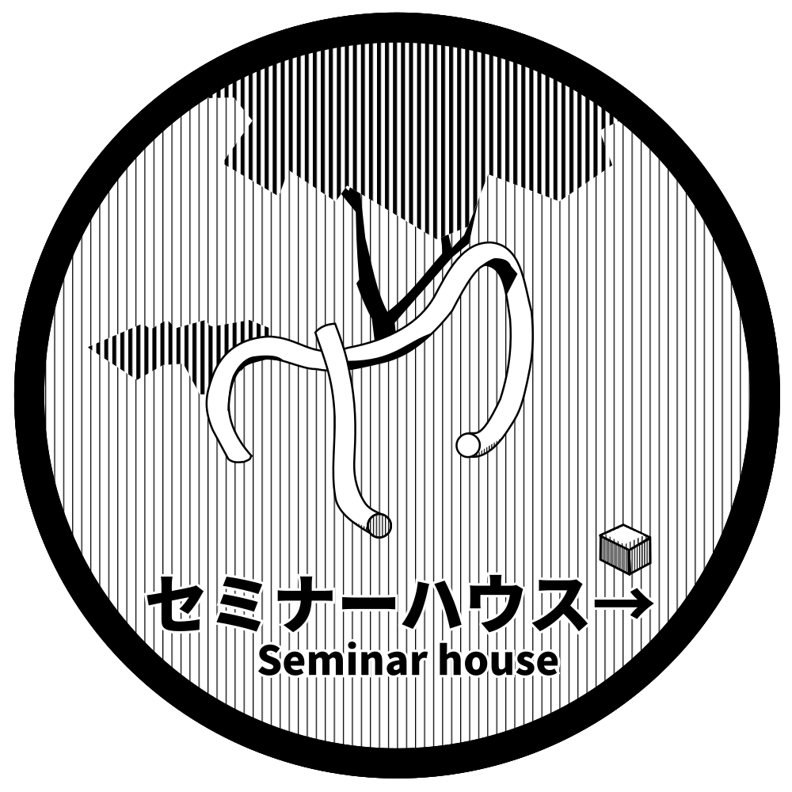

Q06 セミナーハウス
A空港とB空港の間は5100 km 離れています。
その間を時速 900 km の飛行機で移動すると，
何時間何分かかるでしょう。
かんたん
\( (x-3)^2 =2\) を解きなさい。
展開して解の公式でも解けますが，もっと早く解ける方法があります
KENKASHI の8文字を並べ変えたとき，2つのKが隣り合わない確率を求めよ。
文字の並べ方，Kが隣り合わない並べ方について考えてみましょう。
平行な2直線 \(4x-3y+3=0,\:\: 4x-3y-1=0\)
の距離を求めよ。
距離ってことは垂線が引きたくなりますね。
\( p\) を素数としたとき，\( 2p+1,\, 4p+1\) がいずれも素数であるような \( p\) の値をすべて求めよ。
\( \mod\) と \( an\pm b\) を使って素数であることを示そう！定石だよ！
あるクッキーのお徳用袋には，イチゴ味が5個，クリーム味が15個ある。 このクッキーの袋から無作為に1つずつ選んで全て食べ尽くすとき，いつもクリーム味を食べた合計の個数がイチゴ味を食べた合計の個数より常に多い確率を求めよ。 ただし，小数点表示で答えること。